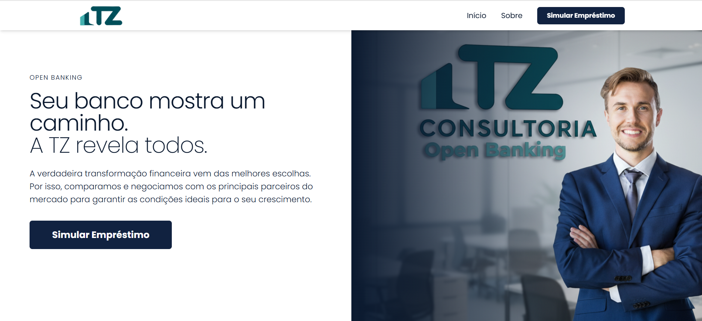
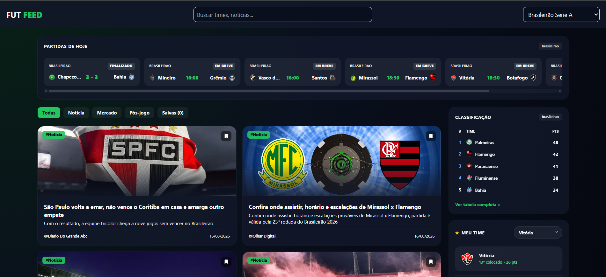
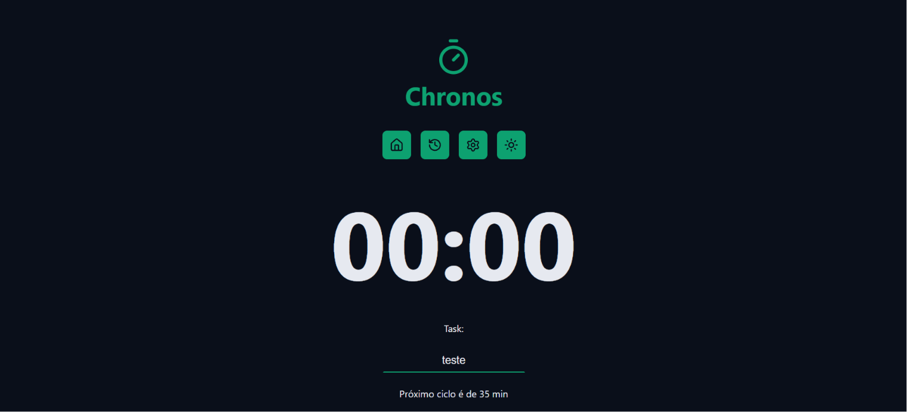
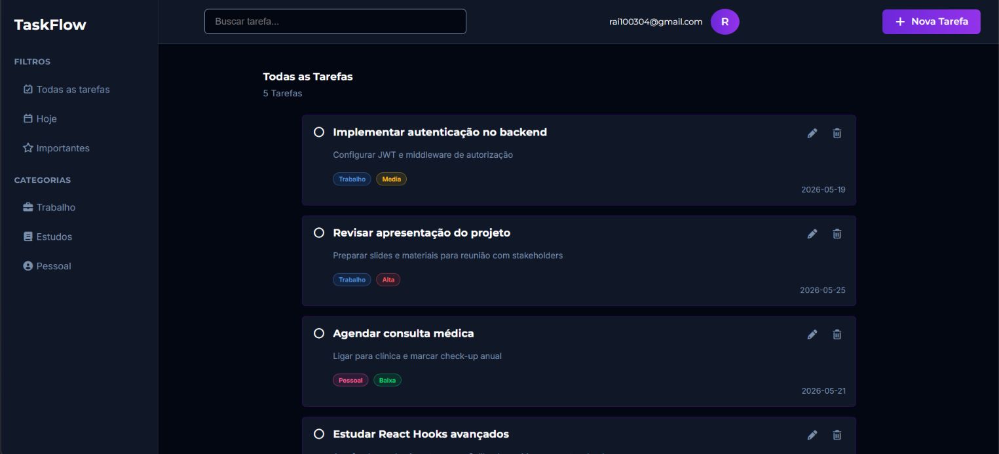
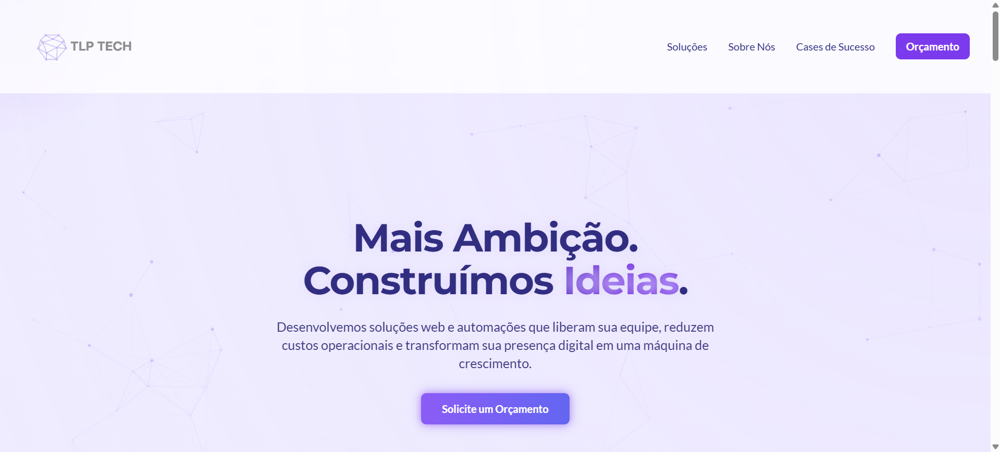
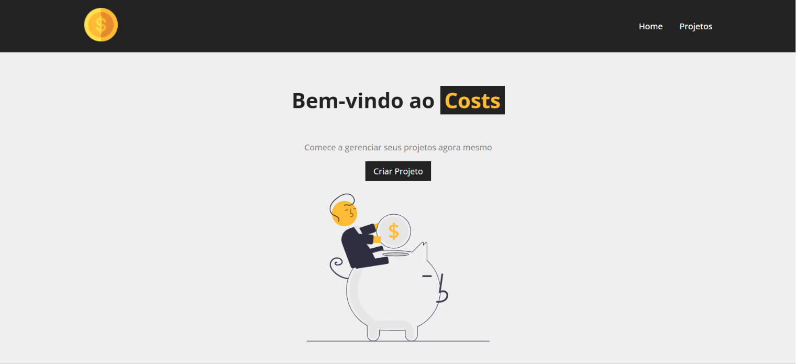

Estudante de Ciência da Computação (UNIFACS) e Tecnólogo em Programação Front-End pelo SENAI CIMATEC (Ford-Enter), com foco na criação de interfaces modernas, responsivas e dinâmicas utilizando HTML5, Tailwind CSS, JavaScript, TypeScript e React. Já desenvolvi projetos reais, como a landing page de uma consultoria em Open Banking. Também atuei como estagiário de desenvolvimento na Hubnexxo, com automação de processos em Python, e estou aprofundando meus estudos em Node.js e banco de dados (SQL). Busco uma nova oportunidade de estágio para contribuir com soluções reais através do código.
Setembro de 2026 – Outubro de 2026
Atuação como Estagiário de Desenvolvimento, com foco na automação de processos utilizando Python. Desenvolvi automações com Selenium e PyAutoGUI, entre elas o cadastro de empresas em sistema contábil, substituindo o preenchimento manual repetitivo. Aplicação de princípios de Clean Architecture para manter o código organizado e de fácil manutenção.
Setembro de 2025 – Outubro de 2025
Landing page institucional para uma consultoria financeira especializada em Open Banking, com foco em apresentar os serviços de crédito da empresa. Projeto desenvolvido em equipe, no qual fui responsável pelo front-end: navegação fluida, componentização limpa, responsividade para dispositivos móveis, seções dinâmicas de depoimentos e parceiros e um simulador interativo de empréstimos.
Visualizar site2023 - 2027 (previsão)
Concluído em 2025

Landing page para consultoria em Open Banking, com simulador de empréstimos.

Dashboard de notícias e classificações de futebol, com consumo de APIs REST.

Aplicação de produtividade com ciclos Pomodoro, histórico de tarefas e tema claro/escuro.

Gerenciador de tarefas com login e dados salvos em tempo real na nuvem.

Website institucional para agência de sites, desenvolvido em equipe.

Gerenciador de projetos e orçamentos, com operações completas de CRUD.